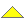
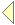

|   | Concise and Comprehensive Documents |
This is a demo material written with the purpose of illustrating the LENO approach.
1.1. Introduction
Contents Up Previous Next Slide All slides Subject index Program index Exercise index
At this level, we give an overview of this material. The outline is as follows:
|